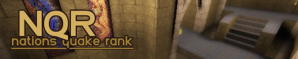

The Ogre Citadel returns to NQR. Kinda.

There has been much debate concerning the map-pool of the upcoming season of NQR. While the majority demanded that NQR stick to “the big three“, there have always been players that complained about the dullness of playing the same three maps for ten years.
One could have come up with the obvious solution: Let clans decide whether they want NQR to be TB3 or TB3+Kenya. The pleased majority decides, the minority is ignored. Well, I think we came up with something better than that.
When signing up to NQR 11, clans will be able to pick whether they want to play the “regular map-pool” or the “extended map-pool”. The regular map-pool will obviously consist of nothing but the big three. The extended map-pool on the other hand will consist of the big three as well as CMT3, CMT4, E2M2TDM and MIDCIT. That’s right, 7 maps in the pool.
And here comes the tricky bit: Clans that picked the extended map-pool can play all of the 7 maps, but only if their opponent picked the extended map-pool as well. If their opponent picked the regular map-pool, all played maps between these two clans will have to be part of “the big three”. With other words: Kenya-loving clans can battle each other on custom maps, but will have to stick to “the big three” when facing a clan that picked the regular map-pool.
Since the majority of all clans is going to stick to the regular map-pool, this change is obviously far from revolutionary, but it seems like the fairest compromise. We are hoping that more than just a handful of clans are going to vote for the extended map-pool. And if not, well… then at least we didn’t force Kenya on anyone who didn’t want it. Feedback is welcome as usual.
Signups will open shortly.
Nice step!